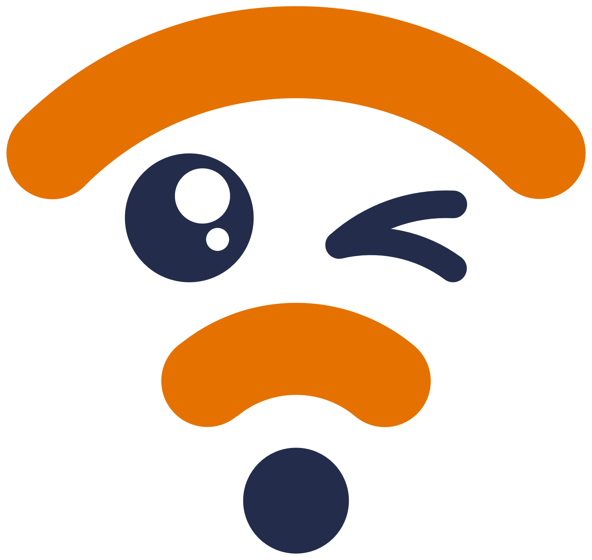

Jianyu Luo
Computer Engineering
Aug, 2025

Wireless Intelligence for Networks and Knowledge
The Wireless Intelligence for Networks and Knowledge (WINK) Lab, founded by Prof. Kun Qian at the Department of Computer Science, University of Virginia, aims to develop wireless technologies that enable ambient intelligence and ubiquitous connectivity with ensured interpretability, reliability, and security. Our current research focuses on the following areas:
WINK Lab is young and has no alumni yet.
WINK Lab possesses a variety of wireless communication and sensing equipment. We are open to collaborations and welcome visitors to our lab. If you are interested in our research or have any questions, please feel free to contact Prof. Kun Qian.